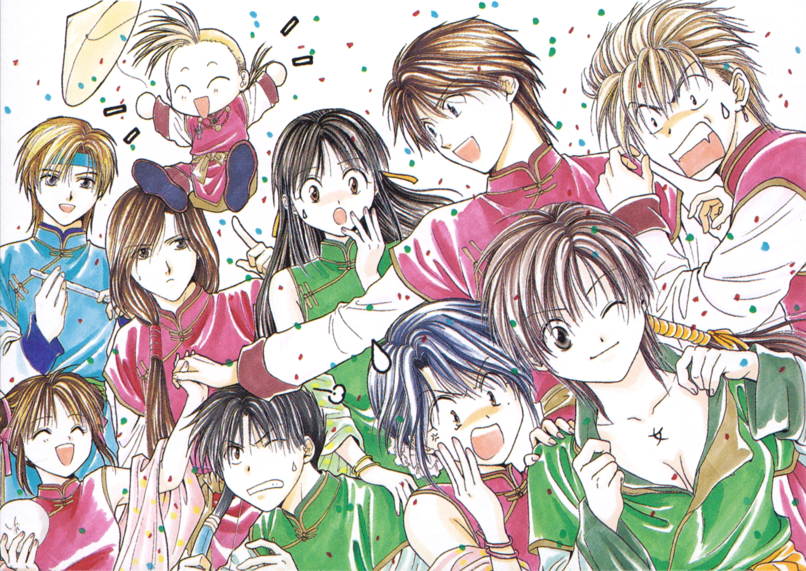

Fushigi Yûgi's plot
The series describes the various trials of Miaka Yuki and Yui Hongo, two middle-school students.
While at the library one day, Miaka and Yui encounter a strange book known as The Universe of the Four Gods. Reading this book transports them into the novel's universe in ancient China. Yui is transported back to the real world almost immediately, but Miaka finds herself the Priestess of Suzaku. Miaka is destined to gather the seven Celestial Warriors of the god Suzaku in order to summon Suzaku and obtain three wishes.
She falls in love with the Celestial Warrior Tamahome, who eventually reciprocates and Miaka's desire to use a wish to enter the high school of her choice begins to shift towards finding a way to be with Tamahome.
Yui is also drawn into the book when she tries to help Miaka to come back to the real world; becoming the Priestess of Seiryuu, working against Miaka out of jealousy over Tamahome and revenge for the humiliation and pain she had suffered when she first came into the book's world.